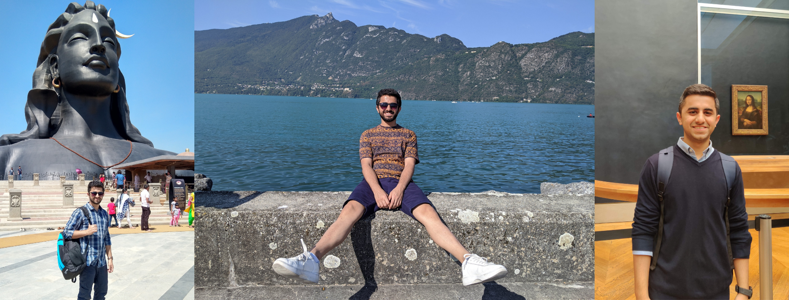

2017
I was introduced to the field of Data Science when I was in the 3rd year of my Bachelor's degree. I started learning to program in Python and read a bunch of online blog tutorials about Data Visualization and Analytics. In the summer break after the third year, I worked as a Data Analyst Intern at SilverSparro Technologies, where I got the chance to work on data-frames and plots in Python and also learn to program in SQL. I also worked at LetsMD as a Data Science Intern where I enhanced my Python skills by writing Python scripts for analyzing the data using the MySQL engine and using seaborn plots to create weekly and monthly reports.
2017-18
In the fourth year of my Bachelor's, I worked on Machine Learning projects and got hands-on experience working with conventional learning algorithms and neural networks. But it wasn't until I was hired as a Senior Software Developer at UST Global that I got to work on incredible client-projects in Machine Learning with real data. I wrote Machine Learning pipelines and built web applications from scratch using Angular and Flask. I also worked with the R&D team where I got the chance to work on projects in Natural Language Processing with TensorFlow and SpaCy.
2018-19
While working at UST Global, I started making plans for pursuing a Master's degree in Machine Learning and Data Science that would give me a research experience and help me enhance my mathematical skills.
Now
What started as an interest using a bunch of online tutorial blogs on Data Analytics and Linear Algebra has grown into a passion and has gotten me to this stage where I have experience in the field of Data Science and Deep Learning and has given me a motivation to grow more into this field.
After I finish my Master's degree, I aspire to work in Machine Learning Research with a team of Data Scientists and Engineers to take on real-life problems in the environment and sustainability.